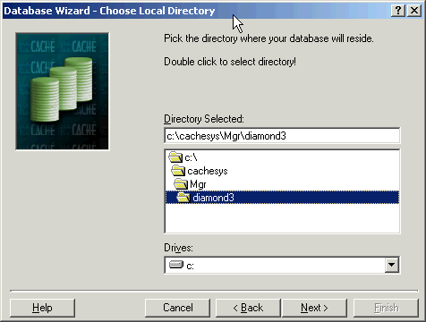
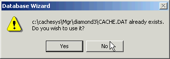
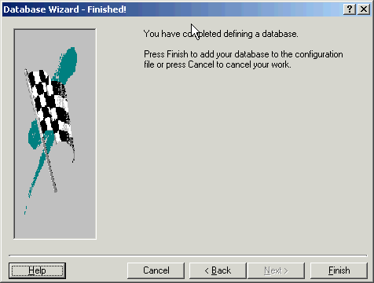

Running the Wizard
Running the Wizard
In Cache, a 'Namespace' is the equivalent of a 'UCI', a term that is common in other M implementations. Cache provides a Wizard to help define a Namespace. The following window appears by clicking on the Configuration manager's Add button.

In the window below, the namespace is given the name DMD3, which is different than the name that the Diamond comes preconfigured to use (KERNEL). This example will illustrate that you can name the namespace anything that Cache allows.

In the following window, we select the database that was created earlier. This step makes an association that Cache uses to understand where its 'world' (namespace) resides on the 'platform' (OS directories).

When you the Next button, the following dialog should appear. Choose yes to use the existing database file (Cache.dat) rather than creating a new one.

The following window confirms the defining of the database.

Finally, the namespace definition is confirmed. (Although this is confusing, since it looks nearly identical to the screen before it, note that it is confirming the namespace, not the database.)